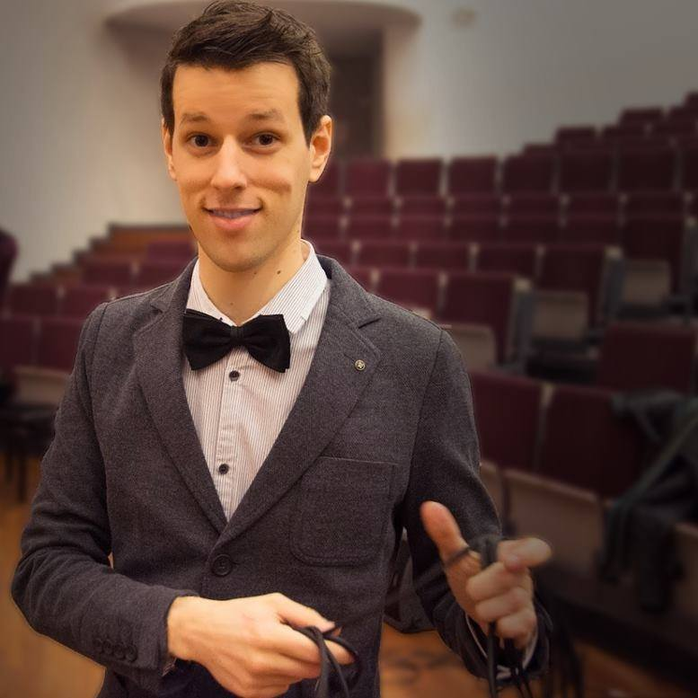

Ingmar Dasseville
Computer Scientist / Pianist for Improv Theatre

Ingmar Dasseville
Computer Scientist
Pianist for Improv Theatre
Computer scientist with a passion for compilers, algorithms and the impossible. Ten years of building and leading engineering teams — from obfuscating compilers and supply‑chain optimisation research to mobile apps — on top of a PhD in knowledge representation and reasoning.
Work Experience
-
Mobile App Lead
Apr 2025 - presentCrazyGames — Leuven, BE
CrazyGames is one of the largest browser game platforms in the world. I lead the team building the CrazyGames mobile app, taking the platform beyond the browser and onto the app stores.
-
Senior Researcher
2024 - Apr 2025Scalable Planning, OMP — Wommelgem, BE
OMP specialises in supply chain optimisation. In the Scalable Planning research team we tackled the scaling issues that come along with supporting more complex supply chains: more products, more plants, and tighter feedback loops.
As senior researcher I helped set out the long-term technical roadmap and built proof-of-concepts to find possible roadblocks before they became real ones.
-
Guardsquare
2019 - 2024DexGuard Team — Leuven, BE
-
DexGuard Product Owner
2023 - 2024 -
DexGuard Team Lead / Group Lead
2020 - 2023 -
DexGuard Compiler Engineer
2019 - 2020
DexGuard is a Java-based tool that obfuscates Android applications. It (re)compiles an already binary app into a new binary that is much harder to reverse engineer.
I started out as an individual contributor. As the company grew, I got the opportunity to grow and develop my leadership skills, ultimately taking on the challenge of leading multiple development teams — from 8 developers in 1 team, to 25 developers over 3 teams. This was a combination of technical and people leadership. I also took DevRel initiatives, gave presentations and organised workshops.
Over my last year at Guardsquare I focused mostly on technical leadership as the Product Owner, while safeguarding the technical soundness of the whole product.
-
-
Doctoral Student + Assistant
2013 - 2019DTAI Research Unit, KU Leuven — Leuven, BE
PhD in knowledge representation and reasoning, where a single declarative model allows for solving multiple problems in that domain. The focus was on improving the modelling languages and developing use cases for interactive configuration problems — still under development at the Interactive Consultant. From a technical perspective this exposed me to C++, (modelling) language design and compilation techniques.
The PhD duration was extended to collaborate with industry partners such as Saint-Gobain.
-
Pianist + Trainer for Improvisational Theatre
2016 - presentFreelance / secondary occupation
Around 50 shows per year with many different organisations: cultural, educational and corporate. I also give trainings and coachings, mainly focused on improvising songs. More on the Improv Piano tab.
Education
-
Doctor of Engineering: Computer Science
2013 - 2019KU Leuven — Leuven, BE
In the Knowledge Representation group of Marc Denecker. Thesis: Higher order modelling for first order solvers.
Includes 1.5 years of non-research industry application development.
-
Master of Engineering: Computer Science
2011 - 2013KU Leuven — Leuven, BE
Specialisation: Artificial Intelligence. Thesis: Evolutionary music composition.
Includes 1 semester at NTNU — Trondheim, Norway.
-
Bachelor of Informatics
2008 - 2011KU Leuven — Leuven, BE
Minor: Mathematics.
Awards and Prizes
-
Vlaamse Programmeerwedstrijd
Flemish Programming Contest, open for both students and companies.
- 1st place: 2009, 2011
- 2nd place: 2014, 2015, 2016, 2018, 2019
- 3rd place: 2012, 2017, 2023, 2024
- 4th place: 2013
-
Kemphanen
Contest for the best Flemish improvised longform, won twice with Commotie.
-
10th International Rule Challenge 2016
The RuleML 2016 Challenge is one of the highlights at the RuleML 2016 conference, a competition among innovative rule-oriented applications aimed at both the research and industrial side. This award was won with the publication: Combining DMN and the Knowledge Base Paradigm for Flexible Decision Enactment.
-
Gouden Krijtje
Award from the students for the best assistant in the Master of Computer Science, won for academic years 2015-2016, 2016-2017 and 2017-2018.
Improv Piano
I play piano for a number of different improv theatre groups. I've had the honor to perform with:- De Kevins
- Swaajp
- Preparee
- De BIL
- Inspinazie
- ...
Musical Improv
I do have a particular interest in performing sung improv theatre. That is why I founded Commotie